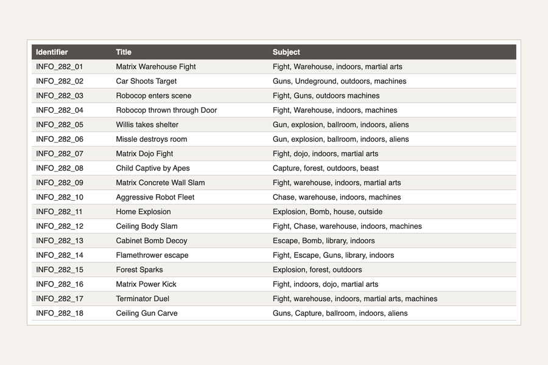
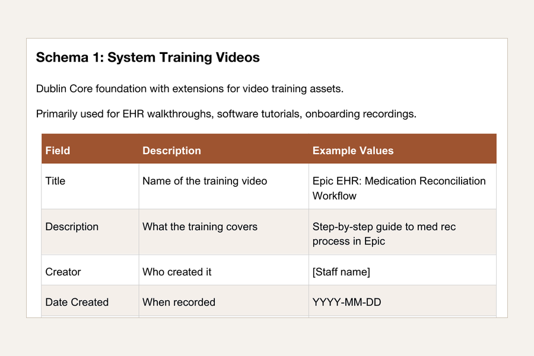
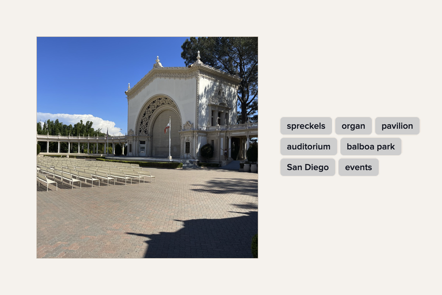

Digital Collections

Video Collection Taxonomy
Dublin Core metadata and controlled vocabularies for a collection of 18 short action clips.
View the full metadata
DAM Plan
A 12-page plan for bringing a DAM system into a hospital IT department, with three 12-field metadata schemas and eight controlled vocabularies.

Flickr Photo Collection
Titles, descriptions, and layered tags for a 16-photo Flickr album, organized by place, landmark, and function.
View the album on Flickr